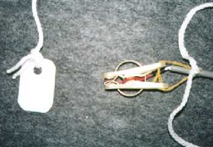
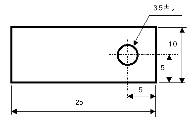
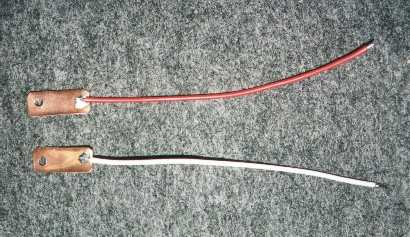
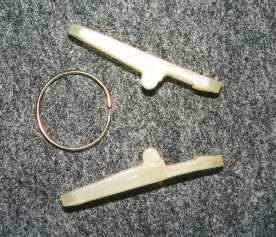
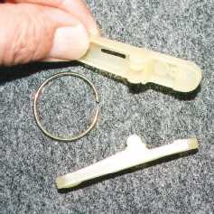
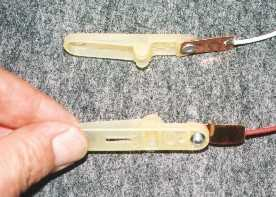
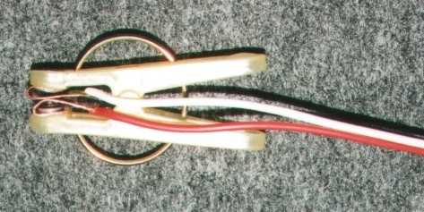
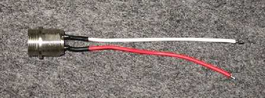
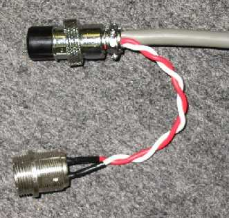

かならずお読みください→
月ヶ瀬離床センサ 作り方

材料（一台分）
● 洗濯バサミ，１個，（ごく普通のもの）
● 銅板，10mmＸ20mm厚さ0.5mmを２枚
（ホームセンターなどで10cmＸ20cm，厚さ0.5mmの大きさの板が入手可能．参考価格３２０円）
● 電線，4m
（二心．被覆が厚めのナースコールに使用しているものと同じ電線が好ましい．ホームセンターでも入手可能，参考価格20mで1180円）
● 単心の電線，約50cm．（あり合わせのものを使用しました）
● ナースコールコネクタ，ナースコールボタン側に使用しているもの（プラグ）と壁面に取り付けられているもの（レセプタクル）の２種類，１組．（使用する病院，施設によって異なりますので，ナースコールメーカに確認して入手してください．）
● インシュロックタイ，１本，（ホームセンターなどで入手可能）
● 平座金（プレーンワッシャ），M3，２個，（ホームセンターなどで，ボルトナットとセットで入手可能）
● 水糸，10cmくらい．（建設現場で縄張りに使用する糸．ホームセンターで入手可能）使用する主な工具
ボール盤（その他のドリルなど），φ3.5の刃，板金はさみ，ブラインドリベット，ハンダこて，ヤスリ，ラジオペンチ，ニッパなど
製作の手順
１．洗濯バサミ部分の製作

厚さ0.5mmの銅板を10mmＸ20mmに板金ばさみで切り取る．角部分やはさみでの切断面は鋭くなっているので，怪我をしないように注意を要する．これらの部分にはヤスリをかけ，なめらかにする．ドリルで図の位置に穴を開ける．（使用する工具によっては穴あけを先に行ってから，切断を行った方が作業が順調な場合がある．）

長さ10cm程度の単心の電線を銅板に写真のようにハンダ付けをする．
 
洗濯バサミを，２つの本体と丸いバネに分解する．
２つの本体の物をはさむ面に，先端のとがった千枚通しのようなもので，穴を開ける． 
銅板を洗濯バサミ本体に図のように取り付け，ブラインドリベットで固定する．このとき補強のためブラインドリベットの裏側にM3の平座金を挿入する．
銅板を洗濯バサミの内側に折り曲げ，洗濯バサミを組み立てる．
２．コネクター部分の製作

レセプタクル（写真は当院ナースコールシステムに適応した，トーコン（株），YVRAｰ16BR2M，参考価格３８０円）の２本の端子に10cmくらいの単心電線をハンダ付けする．このとき端子部分を熱収縮チューブなどで絶縁する．

プラグ（写真は当院ナースコールシステムに適応した，トーコン（株），YVRAｰ16BR2M，参考価格３８０円）の端子に長さ4mの二心電線をハンダ付けする．さらに，レセプタクルにハンダ付けした２本の単心電線をプラグの端子に各々の端子番号をそろえて（即ち，プラグの１番端子とレセプタクルの１番端子，プラグの2番端子とレセプタクルの2番端子を）ハンダ付けする．このとき，プラグの端子には２本の電線をハンダ付けするところがむつかしいかも知れない．さらにこれらをプラグのケースに収まるようにコンパクトに仕上げる必要がある．このような面倒な方法を採用する理由はこちら．
３．洗濯バサミ部分とコネクタ部分の接続
長さ4mの二心電線の他端は，洗濯バサミの先端に取り付けた銅板につながる２本の単心電線にハンダ付けし，この部分も熱収縮チューブで絶縁する．最後に，洗濯バサミの持ち手の穴に水糸の輪をつけ，ここに二心ケーブルをインシュロックタイで固定する．またベッドに固定するためのひももここに取り付ける．(このページの一番上の写真参照）
タグ（洗濯バサミにはさむ板．このページの一番上の写真の左側）
プラスチックの板にひもを付け，タグとする．当院では薬剤の空き容器を利用している．ボール紙の紙片（あると便利）
名刺程度の大きさのボール紙にひもを付けておき，看護／介護作業の際に洗濯バサミにはさんでおくと，誤って作動させずにすむ．（当院の看護師さんが考案しました）
03/05/15 公開